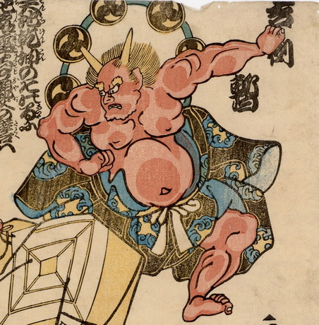

歌舞伎「暫」の腹出しに扮した赤鬼。2本の角があり、雷太鼓を背負っている。
出典：親書誌：U426_nichibunken_0210：四民不動礎吉例暫；ヨツノタミウゴカヌイシズエキチレイシバラク／日付：2010／資源識別子：U426_nichibunken_0210_0002_0000
Copyright (c)2010- International Research Center for Japanese Studies, Kyoto, Japan. All rights reserved.